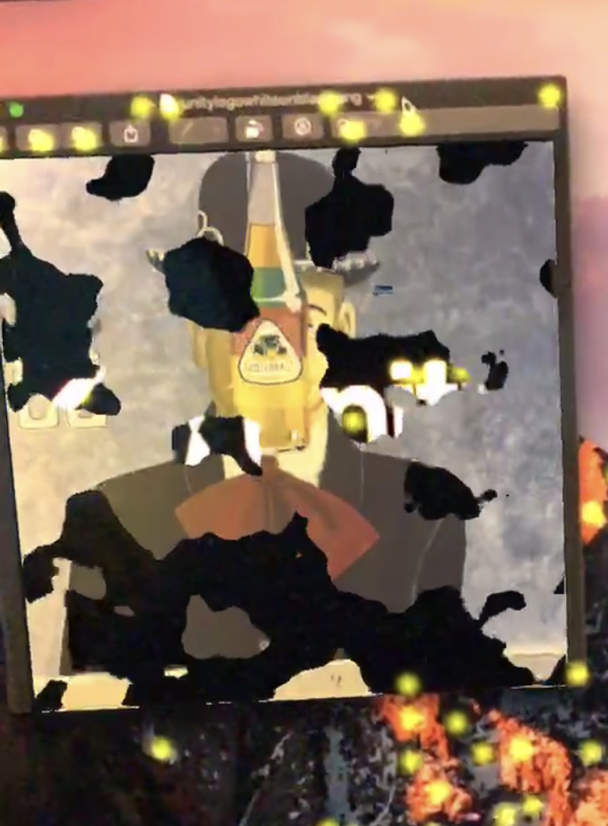
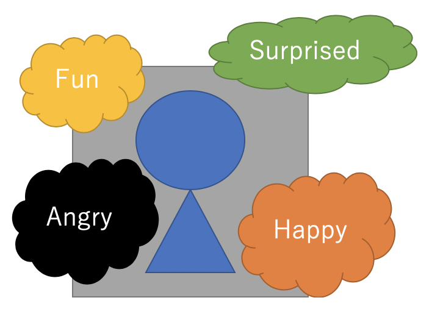
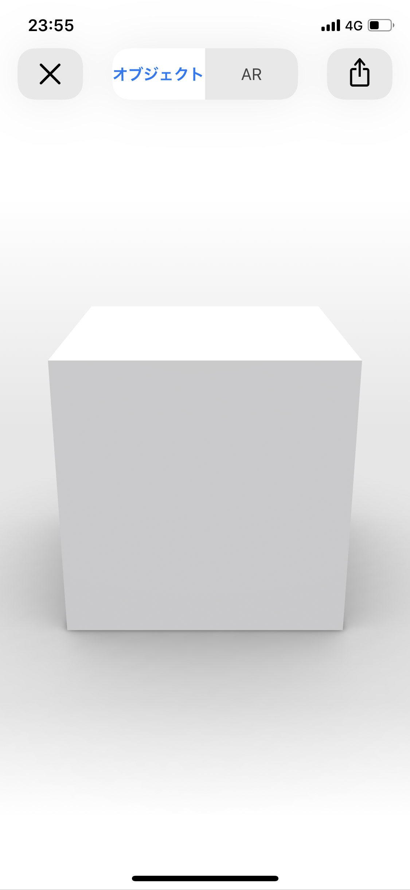

Ratcho's Portfolio
東京大学大学院工学系研究科電気系工学専攻M1。
とあるIoTベンチャーでハードウェアを制御するソフトウェアを書いている。
ARに興味があり、ARのアプリケーションをサンプルとして作ることで、ARの可能性を探っている。
Node.js, JavaScript, C++, Swift, Python, Unity, ARKit, Docker, Express, Serverless
インターン先のIoT企業で作ったもの。
ラズパイ用の、ボタン実装済みHAT基盤から様々なパターンのボタンコマンドを受け付けることが要件。
クリック、ダブルクリックなどの任意のn回クリックと、ある時間k以上ホールドという二種類の入力を任意に組み合わせたコマンドを受け付けることができる。
ハードウェア特有のチャタリングのような問題に対応する部分を工夫して対応しなくてはいけなかった。
様々な入力を組み合わせる部分で、UXを損ねないような、ボタン入力間隔時間を見つけることにも時間がかかった。
OCRtoImageと言う自作アプリケーション。
OCR技術を使って、カメラから取得した映像に映っているテキストを取得する。スクリーンをタップすると、取得した任意のテキストが示すものの画像をAR上で表示することができる。
OCR技術を利用することで、母国語ではない、入力しづらい言語をデジタルに取得することができる。海外の人が日本語を見ても、スマホでその言葉を検索できないと言う問題を解決する。日本語のメニューしか置いていないかつ料理の写真がない飲食店などでの利用が考えられる。
また、AR技術を用いることで、画像を取得した言葉の近くに画像を表示できることや、複数人での共有が簡単になると考えられる。
今後は、AR技術を使って、画像を取得するテキストをカメラ上でハイライトするなどの機能をつけたい。これにより、どの言葉がどんなものを表すのかがわかりやすくなると考えらえる。
子供の頃大好きだったブロック崩しのゲームをARで作ってみた。
カメラを起動して最初に見つけた平面をもとに、ブロック崩しのゲーム面が出現する。
ARを利用することで、現実世界にあったスケールのフィールドを作ることができる。
認識した平面が大きすぎると相当ハードな運動になるので注意が必要である。
ARオブジェクトを共有することでマルチプレイヤーのスポーツなども作ることができ、さらに現実世界のものを元にすると言うことで、VRよりも親しみやすさがあるのではないか。
今は、スマホARと言う形で実装しているので、ARテニスをするにしても、このARブロック崩しにしても、スマホを振り回すことになる。しかし、スマホの画面上でしかARオブジェクトをみることができないので、人間の運動が非常に制限されてしまう。

以前、ARを利用した広告として某ハンバーガーショップの広告が注目された。
このAR広告を非常に面白いと感じたため、簡単に実装した。
やっていることは非常にシンプルである。
まず、ARKitの標準機能で指定した画像を認識するように設定する。そして、カメラでその画像を見ると同時に、その画像の位置にオブジェクトを配置し、シェーダを使ってオブジェクトの見え方を調整する。
`MonoMemo`と言う自分で考えたアプリケーション。実世界のモノに紐づいてメモを残せるような仕組みにできたら面白いと思っている。今はまだ、実装途中。
日常生活していて、ものを見た時に何か思い出すべきことがあるはずなのに思い出せない、と言う経験がこのアプリケーションによってなくせると考えている。
現状、スマホARなので、スマホを常時覗いてないとこのアプリでは上の問題を解決できないが、のちにARグラスが浸透した時には、効果を発揮すると思われる。
分類機モデルはAppleが提供しているものをそのまま使っているので、実用レベルの精度が出ない。しかし、改良していけば個々のモノ特定する精度が向上すると思われる。具体的には、ARAnchorで得られる特徴点の情報や深度カメラによる情報などが使えると考えられる。

卒業研究のために必要となるサンプルアプリケーションの一つとして開発。
入力画像 -> OpenCVによる顔の部分の抽出 -> LBP特徴量 -> Random Forest分類機
と言うような処理の流れで分類。

ARオブジェクトを保存するファイルフォーマットとして`usdz`と言うものがある。
これをhtml内に配置し、スマートフォンのブラウザからアクセスすることで特別なアプリを必要とすることなくARでファイルに保存されたオブジェクトを表示することができる。
これは、のちにECサイトなどで大いに普及すると考えられる。
ARオブジェクトは現実世界の重力方向の平面を認識し、床などに落ちる。このようにして、実際のもののサイズをARで体感することができる。